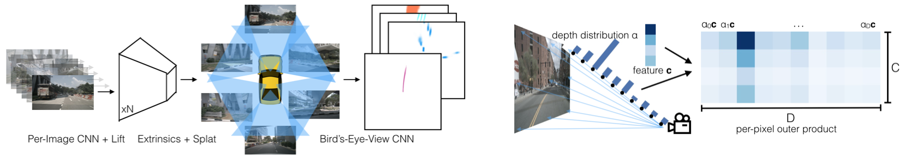
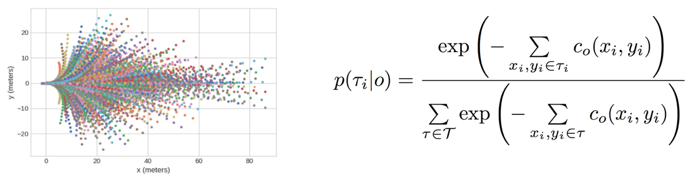
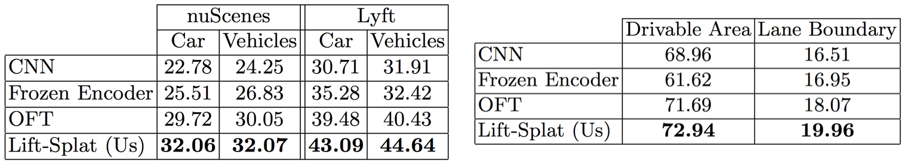

Lift, Splat, Shoot: Encoding Images from Arbitrary Camera Rigs by Implicitly Unprojecting to 3D
NVIDIA, Vector Institute, University of Toronto
ECCV 2020

NVIDIA, Vector Institute, University of Toronto
ECCV 2020
The goal of perception for autonomous vehicles is to extract semantic representations from multiple sensors and fuse these representations into a single “bird’s-eye-view” coordinate frame for consumption by motion planning. We propose a new end-to-end architecture that directly extracts a bird’s-eye-view representation of a scene given image data from an arbitrary number of cameras. The core idea behind our approach is to “lift” each image individually into a frustum of features for each camera, then “splat” all frustums into a rasterized bird’s-eye- view grid. By training on the entire camera rig, we provide evidence that our model is able to learn not only how to represent images but how to fuse predictions from all cameras into a single cohesive representation of the scene while being robust to calibration error. On standard bird’s- eye-view tasks such as object segmentation and map segmentation, our model outperforms all baselines and prior work. In pursuit of the goal of learning dense representations for motion planning, we show that the representations inferred by our model enable interpretable end-to-end motion planning by “shooting” template trajectories into a bird’s-eye-view cost map output by our network. We benchmark our approach against models that use oracle depth from lidar.

Learning Cost Maps for Planning We frame end-to-end motion planning ("shooting") as classification over a set of fixed template trajectories (left). We define the logit for template to be the sum of values in the bird's-eye-view cost map output by our model (right). We then train the model to maximize the likelihood of expert trajectories.
Equivariance To be maximally useful, models that perform inference in the bird's-eye-view frame need to generalize to any choice of bird's-eye-view coordinates. Our model is designed such that it roughly respects equivariance under translations (top left) and rotations (top right) of the camera extrinsics. Lift-Splat Pooling is also exactly permutation invariant (bottom left) and roughly invariant to image translation (bottom right).

